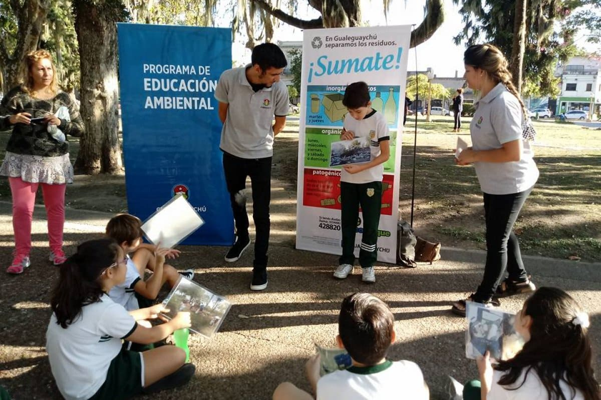
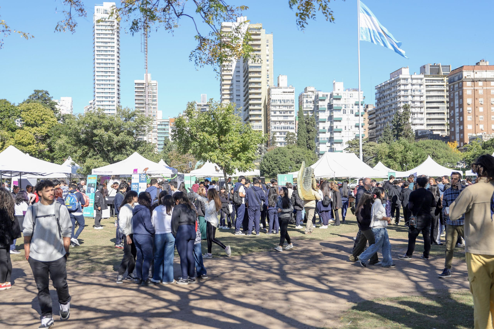
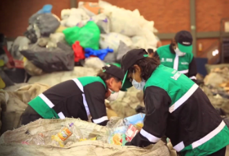
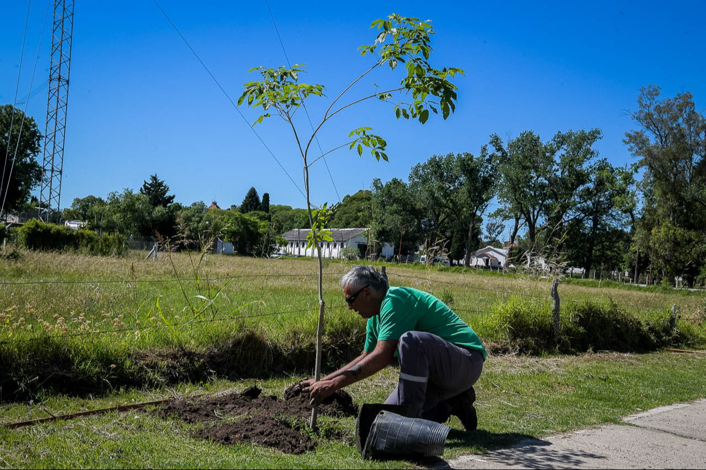

Sembrando conciencia diaria

Buscamos que los jóvenes conozcan y se interesen sobre la conciencia ambiental a través de la educación cotidiana.
En Tierra Fértil nutrimos a la comunidad con la información necesaria para cultivar un pensamiento crítico hacia el planeta. Creemos que una sociedad bien informada es la base para un futuro sostenible. Conocenos
Trabajamos para promover prácticas responsables que beneficien tanto a las personas como al planeta. A través de nuestros programas educativos, talleres y eventos comunitarios, buscamos inspirar a la comunidad a adoptar métodos que sean respetuosos con la tierra y que contribuyan a un futuro más verde y saludable para todos.

Buscamos que los jóvenes conozcan y se interesen sobre la conciencia ambiental a través de la educación cotidiana.

Queremos incluir a las comunidades municipales a participar en un festival ambiental organizado por Tierra fértil.

Fomentamos la creación de puestos de trabajo dignos dentro del sector ambiental, profesionalizando la labor de quienes cuidan nuestra ciudad día a día.

Llevamos adelante jornadas de reforestación urbana para mejorar la calidad del aire, reducir el calor en las ciudades y devolverle la biodiversidad a nuestros barrios.